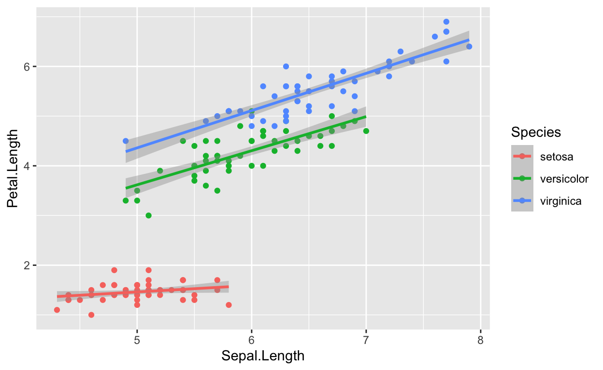
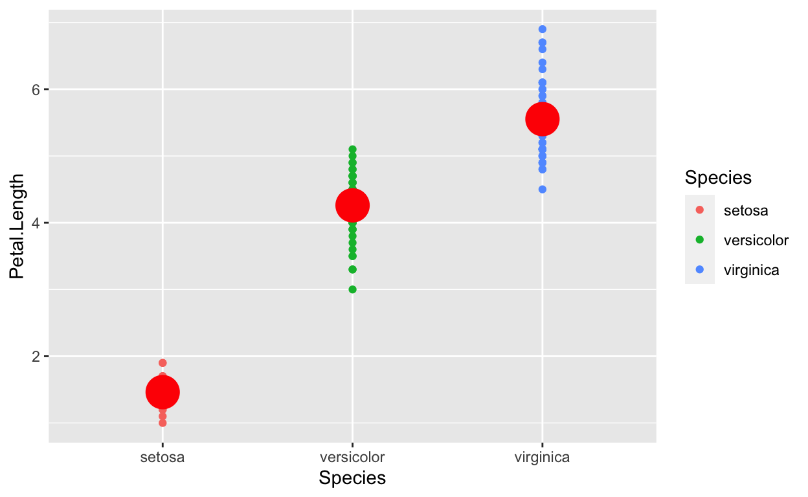
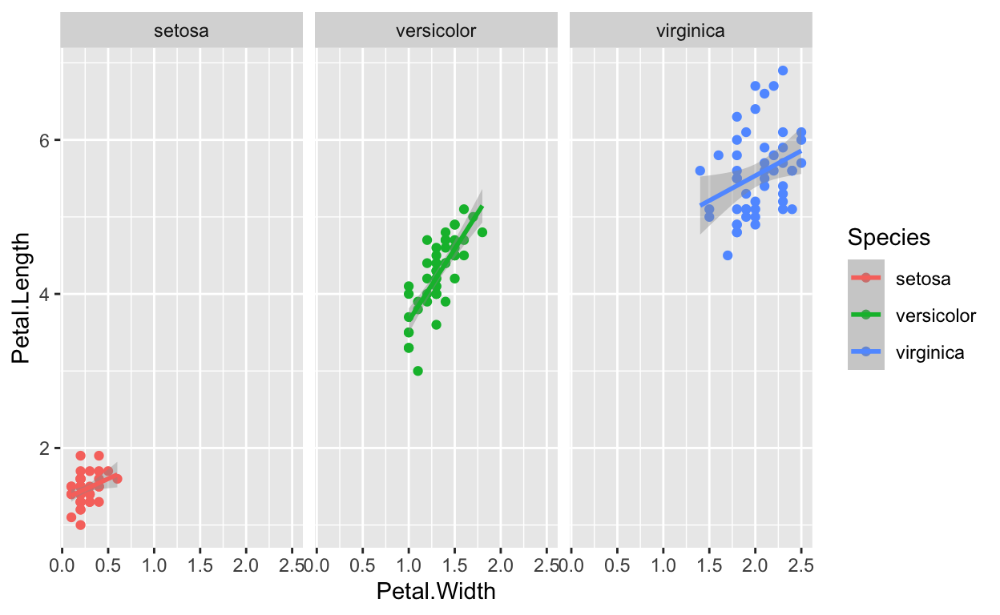
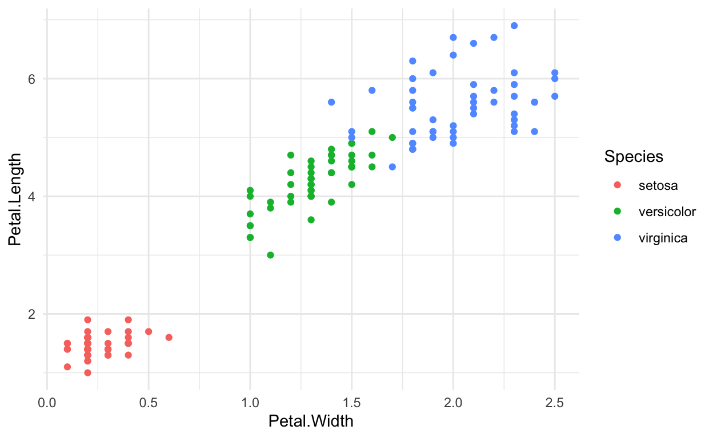

Before you start
You need to be familiar with different types of data (continous, categorical) and be able to handle dataframes.
Getting started with ggplot
Install the ggplot2 package
Before using the package for the first time, run the install.packages() command:
install.packages("ggplot2")To activate the package, run this code:
library(ggplot2)The basics
ggplot is based on the grammar of graphics, a terminology describing the components a figure to visualize data is based on. Let us have a look at these terms.
To produce a figure or plot, we take data values and use elements like dots, squares, lines, and colour to convert the data into a visual graphic. There are many different ways of visualizing data, but there are some rules that apply in general. A plot is always built on data, and a number of other components such as aestetics, geometry, scales. These different components combined make up a plot.

Visualization of how ggplots are built.
The code
The code for a basic scatterplot looks something like this:
The main function is ggplot() and is used to define the data and the aestetics. Each other component of the plot is added with +, like a different layer.
Exercise
Position
Now it is your turn. Add the required R code to plot Petal.Length against Petal.Width.
ggplot(iris, aes(x = , y = , colour = Species)) +
geom_point() +
theme_minimal()Colour
Add the required R code to colour each species in a different colour.
ggplot(iris, aes(x = Petal.Length, y = Petal.Width, colour = )) +
geom_point() +
theme_minimal()Geom
Add the required R code to plot the data as points.
ggplot(iris, aes(x = Petal.Length, y = Petal.Width, colour = Species))Here we will describe the different components a plot is made of:
Aestetics
To display the data, we use different elements, the aestetics. The most important element is the position which describes the location on the plot, usually by x and y. Other important elements are shape, size, colour, line type and line width, which describe how the data is presented on the plot.
Let us get started with an example. To draw a plot we use the function ggplot(). The first element in this function is data. The second element is the aestetic where we define the position with x and y and the other elements like colour, shape etc.

This will make a plot, but so far the data is not plotted. We will need some more component. Let us look at the geom function.
Aestetics only allow, variables from the dataframe. E.g. colour = “red” does not work. Maybe show an example.
Geoms
To plot the actual data, you need the geom function. There are many different geom functions that you can choose. See chapter XXX for an overview. Here, we will use geom_point, which displays the data as points. Each species gets a different colour, and there is automatically plotted a legend to the right of the plot.

In the geoms one can also define specifics like data, colours, etc. geom_point(colour = “red”)…
Let us look at some other important components.
Stats
Stat is a powerful way to summarize your data or adding statistics to your plot. You can add a regression lines or plot means on top of your data.

## Warning: Removed 3 rows containing missing values (geom_segment).
Scales
… defince aestitics… colour, shape, linetype, and fit it to the variable type. What should we show here?
Facets
Facets divides the plot into subplots to display the data of different groups.

Themes
There are many different themes to display the data, for example removing the grey background. Each element of the plot can also be manipulated manually, see here.

A ggplots is built with layers
The order of the different components of a plot often does not matter very much (although there are discussions around that topic). You can see the different components of the plot as different layers that are plotted on top of each other. Usually, the order is not so important, unless something needs to be plotted on top of something else.
For examle, you want to plot the data below and the mean values on top, and not the other way round. See below, the red points showing the means have disapeard. So, the things you want on top are plotted after.
## Warning: Removed 3 rows containing missing values (geom_segment).
Common mistakes
In the beginning you will make mistakes which will result in error messages, warnings or incomplete plots. These mistakes often occur when one of the layers is missing, because a + is forgotten at the end of a line, due to a typo, or the data or other elements are forgotten. Let us look at some common mistakes.
No data
If you forget to specify the data ggplot will not be able to make a plot and you will get the following error message:
ggplot(aes(x = var1, y = var2)) +
geom_point()## Error: `data` must be a data frame, or other object coercible by `fortify()`, not an S3 object with class uneval
## Did you accidentally pass `aes()` to the `data` argument?Missing aesthetics
If you forget to define the aestetics aes() you will also get an error message and a empty image:
ggplot(data = df) +
geom_point()## Error: geom_point requires the following missing aesthetics: x and y
Missing geometry
If the geometry is missing geom_point(), ggplot will draw a empty plot, with axis labels, but show not data, because you have not defined how to plot the data.